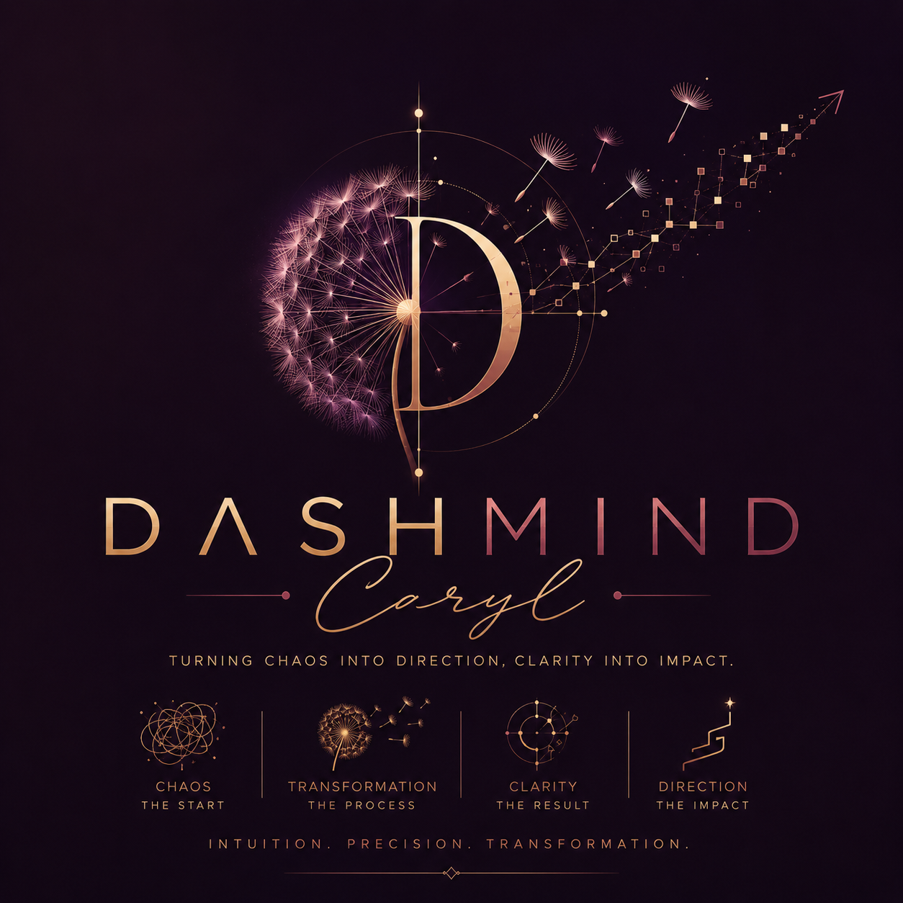

Turning Chaos Into Direction,
Clarity Into Impact.
Intuition · Precision · Transformation

I'm Caryl — an aspiring data analyst and front-end developer with a passion for finding the pattern inside the noise. Like a dandelion scattering seeds, data points appear random until you trace the connections that give them meaning.
My approach blends analytical rigor with a designer's eye. I don't just clean data — I transform it into dashboards, reports, and interactive experiences that make insight impossible to ignore.
"Every messy spreadsheet is just a story waiting to be structured."
Based in the Maldives, I work across data analysis and web development — bridging the gap between complex information and beautiful, actionable presentation.
Chaos is just direction waiting to be found.
Data is just impact waiting to be told.
Intuition · Precision · Transformation
Unified 3 years of scattered sales records into a single real-time Power BI dashboard. Stakeholders moved from weekly guesswork to daily clarity on KPIs and regional performance.
Converted static PDF findings into a fully responsive interactive web report with animated charts, filterable tables, and scroll-driven storytelling.
Transformed a 10,000-row multi-sheet nightmare into a clean SQL database with an Excel front-end, cutting reconciliation time from 3 hours to under 15 minutes.
Identified key churn signals from behavioral data using DAX measures and cohort analysis, enabling targeted retention strategies with measurable outcomes.
Whether you have a dataset that needs clarity, a dashboard that needs elegance, or a project that needs someone who speaks both data and design — I'd love to hear from you.